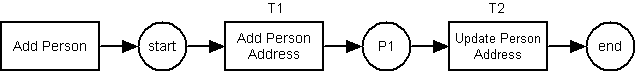
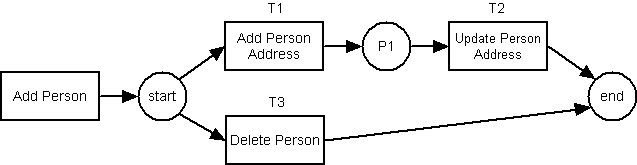
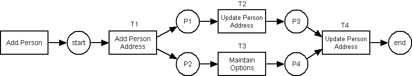
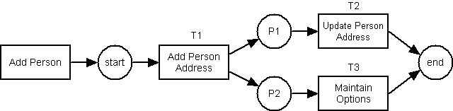
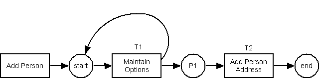

Example 1 – sequential routing
Here is a diagram:

The trigger which starts a new CASE is 'Add Person'
There is 1 place:
There are 2 transitions:
- T1 (Add Person Address), Type=User
- T2 (Update Person Address), Type=User
There are 4 arcs:
- Start -> T1, Inward, Sequential,
- T1 -> P1, Outward, Sequential
- P1 -> T2, Inward, Sequential
- T2 -> End, Outward, Sequential
Example 2 – conditional routing with a timed split
Here is a diagram:

The trigger which starts a new CASE is 'Add Person'
There is 1 place:
There are 3 transitions:
- T1 (Add Person Address), Type=User
- T2 (Update Person Address), Type=User
- T3 (Delete Person), Type=Timer (1 hour) – must be no user dialog
There are 6 arcs:
- Start -> T1, Inward, OR-Split (Implicit)
- Start -> T3, Inward, OR-Split (Implicit)
- T1 -> P1, Outward, Sequential
- P1 -> T2, Inward, Sequential
- T2 -> End, Outward, OR-Join
- T3 -> End, Outward, OR-Join
If T1 is not fired within the time limit, T3 will be fired instead. Whichever of T1 and T3 is fired first will cause the other to be cancelled.
Expired items can be identified by running script workitem(timeout).php as a cron job at timed intervals.
Example 3 – parallel routing
Here is a diagram:

The trigger which starts a new CASE is 'Add Person'
There are 4 places:
There are 4 transitions:
- T1 (Add Person Address), Type=User
- T2 (Update Person Address), Type=User
- T3 (Maintain Options), Type=User
- T2 (Update Person Address), Type=User
There are 10 arcs:
- Start -> T1, Inward, Sequential
- T1 -> P1, Outward, AND split
- T1 -> P2, Outward, AND split
- P1 -> T2, Inward, Sequential
- P2 -> T3, Inward, Sequential
- T2 -> P3, Outward, Sequential
- T3 -> P4, Outward, Sequential
- P3 -> T4, Inward, AND join
- P4 -> T4, Inward, AND join
- T4 -> End, Outward, Sequential
Example 4 – conditional routing with a guard
Here is a diagram:

The trigger which starts a new CASE is 'Add Person'
There are 2 places:
There are 3 transitions:
- T1 (Add Person Address), Type=User
- T2 (Update Person Address), Type=User
- T3 (Maintain Options), Type=User
There are 7 arcs:
- Start -> T1, Inward, Sequential
- T1 -> P1, Outward, Explicit OR split, Guard=
if (strlen($fieldarray'telephone_no']) < 1) return TRUE;
- T1 -> P2, Outward, Explicit OR split
- P1 -> T2, Inward, Sequential
- P2 -> T3, Inward, Sequential
- T2 -> END, Outward, OR join
- T3 -> END, Outward, OR join
After transition T1 is executed the workflow engine will examine the 2 arcs for a pre-condition (guard). If this condition evaluates to TRUE then the arc with the condition will be processed and the other arc will be ignored. If the condition is FALSE then the arc without the condition will be processed.
Example 5 – iterative routing
Here is a diagram:

The trigger which starts a new CASE is 'Add Person'
There is 1 place:
There are 2 transitions:
- T1 (Maintain Options), Type=User
- T2 (Add Person Address), Type=User
There are 5 arcs:
- Start -> T1, Inward, Sequential
- T1 -> Start, Outward, Explicit OR split, Guard=
if (strlen($fieldarray'telephone_no']) < 1) return TRUE;
- T1 -> P1, Outward, Explicit OR split
- P1 -> T2, Inward, Sequential
- T2 -> END, Outward, Sequential
After transition T1 is executed the workflow engine will examine the 2 arcs for a pre-condition (guard). If this condition evaluates to TRUE then the arc with the condition will be processed and the other arc will be ignored. If the condition is FALSE then the arc without the condition will be processed.